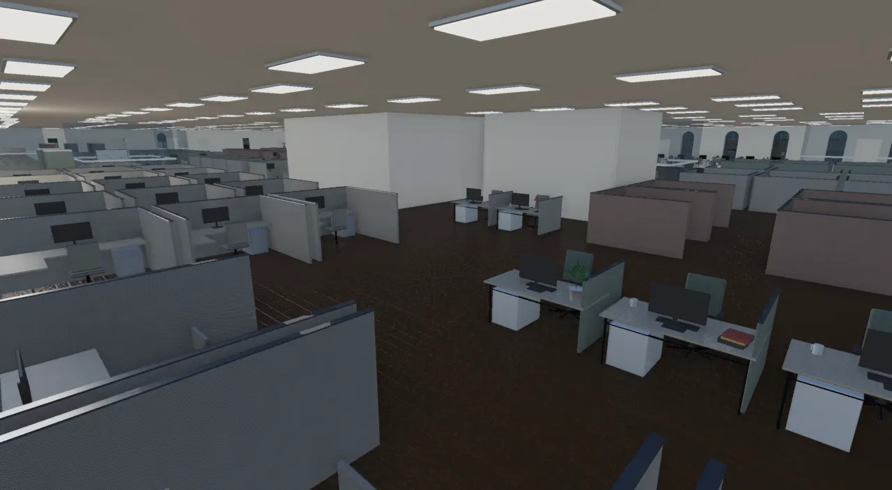
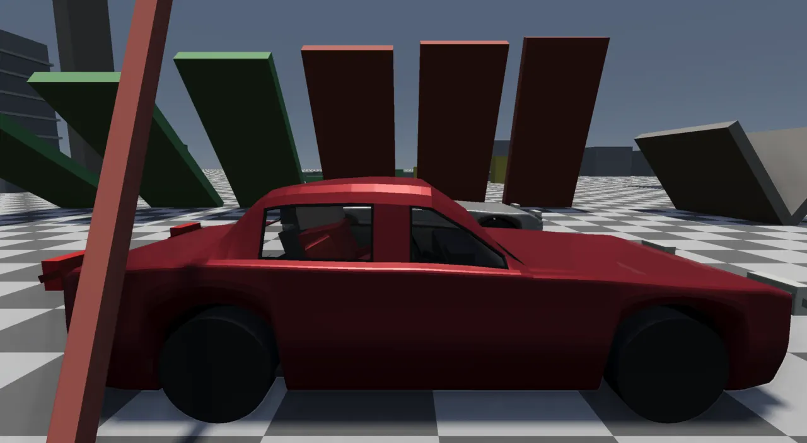

The procedural language
Every generator in the engine, whether it makes trees, rocks, buildings, cars or textures, is built from one shared vocabulary of C++ words over a few value types, and Lua scripts can call all of them. The rule is that new content is a recipe written in those words. When a recipe needs something the vocabulary lacks, the missing word is added to the vocabulary, not written privately inside the recipe.
This page is about that vocabulary and the rules around it. The site's older Procedural Toolkit page is the earlier overview of the individual tools (L-systems, SDFs, noise, terrain), and parts of it predate the current code.
The rule, in Glenn's words
2026-09-24
"We should always look to expand the procedural capabilities of the engine and to use what is there as a language for building things and only do one offs if absolutely necessary." (ADR-0098)
2026-10-13
"Everything, and I mean everything in this engine should use the same tooling ... this way we know that every polygon ends up being right when it's created." (ADR-0172) And: "how many different ways do we have to mesh something? There should be a common set of tools."
2026-10-26
"Build on what exists; one system per job" became a written rule in
AGENTS.md (commit 619d194a): "Two systems doing one job is a bug to fix, not a style
choice."
Each quote came after the same kind of failure. A feature shipped with its own private random stream, icosphere, noise or box function. It worked, but it added nothing the rest of the engine could reuse, and sometimes it was simply wrong. The clearest case is a turnstile built from a copied box function whose fixed index list was wound backwards. The turnstile rendered inside out, even though a shared function that winds faces correctly already existed.
The shape of it
The layers (ADR-0028). Lua decides what a thing looks like. The hot loops (grammar expansion, meshing, baking) run in C++. Every mesh comes out as the same value type and is checked by the same audit.
How it got this way
| ADR | Decision |
|---|---|
| 0021 | Procgen is a C++ library of generators over shared value types (Mesh, Field, Texture,
Frame). Every generator is (parameters, seed) → content and deterministic. A "procgen language" would
only be distilled from the library once three generators existed, never designed first. |
| 0022 | The realness spectrum: one generator can be regenerated at every load, baked to a static asset, or (later) an editable instance. |
| 0023 | Embed Lua 5.4 behind a sealed ScriptVM. The procgen surface is pure: no
io/os, no clock, and randomness only from seeded streams, so scripts are reproducible and
can run on worker threads. Python was rejected because its GIL serializes exactly the fan-out procgen
needs. |
| 0025 | The node graph was removed. It had one consumer (a rock), a list editor and no bridge to Lua. Lua is the one authoring path, and any future visual editor should emit Lua. |
| 0026, 0032 | A procedural object is a multi-output asset: N material parts (bark and leaves, walls and glass) plus colliders. Every placement path takes any N. |
| 0028 | Three layers: L0 primitives, L1 grammar interpreters, L2 free Lua recipes. "A grammar is a tool called from Lua, never a wall." |
| 0042, 0043 | The city's pieces and the textures become Lua recipes over bound C++ words. A Lua binding calls the same C++ builder the engine uses, so geometry never forks. A brick texture is built from field primitives, not requested as a preset. |
| 0098 | The vocabulary grows; content is recipes over it. The flora work's private helpers were
folded into shared words: tileable fields, the shape kit, ProcRng, and bakeCached. |
| 0139 | The polymesh kit: box-modelling operations for hard surfaces, first used for cars. |
| 0172, 0173 | The mesh audit and the mesh library v1: one winding convention, one triangulator, one set of emit words, and every producer moved onto them. |
A recipe and the word it calls
The smallest complete example is a brick texture. The recipe is Lua:
local function brick(opts) opts = opts or {} local lattice = texture.brick{ cols = opts.cols or 6, rows = opts.rows or 14, mortar = opts.mortar or 0.09, variation = opts.variation or 0.4, seed = opts.seed or 7, } -- Fine grit breaks up the flat brick faces (kept near 1 so bricks stay bright). local grit = texture.fbm{ seed = 9, scale = 40, octaves = 4 }:scale_bias(0.25, 0.78) local mask = lattice:mul(grit) return texture.bake_color(mask, opts.mortar_color or {0.64, 0.62, 0.58}, -- mortar (mask = 0) opts.brick_color or {0.58, 0.20, 0.14}, -- brick (mask = 1) opts.size or 256) end return brick()
texture.brick is a hand-written binding. It reads the Lua table, calls the C++ word, and pushes the
result back to Lua as a userdata that owns a Field2 closure:
int l_tex_brick(lua_State* L) { pushField(L, fieldBrick(optField(L, 1, "cols", 6), optField(L, 1, "rows", 12), optField(L, 1, "mortar", 0.1), optField(L, 1, "variation", 0.35), static_cast<uint32_t>(optField(L, 1, "seed", 0)))); return 1; }
The word itself is a function that returns a function. A texture field is a closure over (u, v), the same way an
SDF is a closure over a 3D point, so combinators such as fieldMul simply wrap closures in another
closure:
Field2 fieldBrick(double cols, double rows, double mortar, double variation, uint32_t seed) { double half = mortar * 0.5; return [=](double u, double v) -> double { double rf = v * rows; int row = static_cast<int>(std::floor(rf)); double offset = (row & 1) ? 0.5 : 0.0; // running bond double uf = u * cols + offset; int col = static_cast<int>(std::floor(uf)); double fu = uf - std::floor(uf); double fv = rf - row; double mu = std::min(fu, 1.0 - fu); // distance to column edge double mv = std::min(fv, 1.0 - fv); // distance to row edge if (mu < half || mv < half) return 0.0; // mortar gap double t = (hash2i(col, row, seed) & 0xffffu) / 65535.0; return 1.0 - variation * t; // per-brick darkening }; }
A recipe's journey through the layers. The same C++ words build the engine's own bark, stone and
terrain-layer textures (procgen/material_recipes.h), so a script and the engine share one
implementation.
Value types, and the N-part model
A generator returns one of a few value types: a RenderMesh (an indexed triangle list), a field (a 2D
Field2, an Sdf or a terrain HeightField, each a closure), a
TextureData (CPU pixels; the loader uploads it, and procgen never touches the GPU), or a whole
ProcModel. A model is the composable unit (ADR-0042): parts, instance groups, colliders and terrain
flattens. Models nest by merge, so a recipe can return a lamp, a block or a city in the same
shape.
struct ProcModel { std::vector<ProcPart> parts; std::vector<ProcInstanceGroup> instances; std::vector<ProcCollider> colliders; // Cut/fill footprints (ADR-0044) the recipe wants graded into the *level* // ... std::vector<TerrainFlatten> flatten; // Fold another model into this one (composition). void merge(const ProcModel& o) { parts.insert(parts.end(), o.parts.begin(), o.parts.end()); instances.insert(instances.end(), o.instances.begin(), o.instances.end()); colliders.insert(colliders.end(), o.colliders.begin(), o.colliders.end()); flatten.insert(flatten.end(), o.flatten.begin(), o.flatten.end()); }
A part is {mesh, ProcMaterial} (ADR-0032). The model holds an ordered list of them because a tree is
opaque bark plus alpha-cut leaves, and a building is walls plus glass. Neither can be drawn as one mesh with one
material. proc_model.h also records a lesson: ProcMaterial once lacked opacity, emission
and two-sidedness, so material.new{opacity = 0.32} parsed fine in Lua and was then dropped, and car
glass rendered opaque. The comment there sets the rule: "Anything a recipe can set must exist here or it does not
survive the trip."
Lua: one authoring path
The procgen surface is a single file of hand-written bindings over the raw Lua C API (ADR-0023 chose not to add a binding library such as sol2). It registers these globals:
| Global | Words (examples) | C++ behind it |
|---|---|---|
mesh | box, lathe, tube, icosphere, displace, facet, block, box_frame, polygon, prism, column, autosmooth, audit | MeshBuilder, mesh_audit.h |
poly | section, resample, loft, box; methods select, extrude, inset, crease_*, mirror_x, subdivide, to_parts | procgen/polymesh.h |
texture | brick, fbm, tile_fbm, cells, cell_edges, bands, bake_color, bake_normal, bake_rgba | procgen/texture_field.h |
sdf, noise, polygonize | sphere, capsule, smooth_union; fbm | procgen/sdf.h, noise.h |
lsystem, tree | create, parametric, turtle_mesh, segments; skin | lsystem.h, tree.h (skinTree) |
scope, building | box, inset, split; grow, mass, envelope, space_graph | the shape grammar, the architect |
stylized, real | tree, rock, grass | the flora recipes |
terrain, scatter, planet | fbm, ridged, warp, erode, route, mesh; rocky, gas | terrain_field.h, planet.h |
model, material, city, streetfurniture,
furniture | new; lamp, traffic_signal; piece | ProcModel, the street and
furniture kits |
The scope words show the shape grammar driven from Lua. This planter is the whole recipe:
-- The stone body, then a soil slab inset from the rim and capping the top. local s = scope{ origin = {-w / 2, 0, -d / 2}, size = {w, h, d} } local body = s:box(stone) local top = s:inset(0.14):split('y', { h - 0.1, 0.1 })[2] -- top 0.1 m return mesh.merge({ body, top:box(soil) })
Some recipes are data rather than code. tree_recipes.lua leaves behind a table that C++ reads once
(see Growing trees and forests), so no Lua runs per branch. ADR-0028 records the line
between the two: expansion and meshing are hot and stay in C++, while composition and every tunable number belong
to the script.
Textures from a field vocabulary
Textures were once named presets (surface_maps.h: brick, concrete, and so on). ADR-0039 baked them to
shared tiling texture sets so they mip-filter. ADR-0043 made them composable, and ADR-0098 grew the
vocabulary:
// --- TILEABLE primitives (the flora plan's terrain layers, rocks, leaves). Exactly periodic // over the unit square: a lattice of `period` cells that wraps, so a baked tile repeats with no // seam. (fieldNoise / fieldFbm above sample unbounded noise and do not tile.) All in [0, 1]. Field2 fieldTileNoise(uint32_t seed, int period); Field2 fieldTileFbm(uint32_t seed, int period, int octaves); // period doubles per octave // Cellular (Worley) over a wrapping jittered grid of `period` cells a side: Field2 fieldCells(uint32_t seed, int period); // distance to the nearest cell point (0 at it, ~0.5-0.7 between) Field2 fieldCellEdges(uint32_t seed, int period); // distance to the nearest cell BOUNDARY (0 on a crack) Field2 fieldCellId(uint32_t seed, int period); // a random value per cell (plates, pebbles, tones)
Note the warning in the comment: fieldNoise and fieldFbm do not tile, so anything baked
to a repeating texture uses the Tile forms. The bark recipes add one more caution (from the tree lab):
integer repeats of one noise make identical columns, so use co-prime counts. bakeCached is the one
content-keyed disk cache for any bake (cache/fields). A closure cannot be hashed, so the caller names
the recipe and every parameter in a key string, including a version. Shader-side looks follow the same rule as
material features any surface can switch on: triplanarScale, variation and a top
layer (moss, snow) in push constants (ADR-0098).
Meshes: one convention, one library
The engine's front face is clockwise seen from the side the normal points to: a triangle (a, b, c) faces
along cross(c − a, b − a), and Vulkan culls back faces with VK_FRONT_FACE_CLOCKWISE. The offline path
tracer draws both sides, so a mesh wound backwards looks fine there and only goes wrong in the viewer. That is how
inside-out meshes kept slipping through.
The winding rule, and the one function that applies it. A caller states which way a face should point. It never writes the index order itself.
void MeshBuilder::triFacing(RenderMesh& mesh, uint32_t a, uint32_t b, uint32_t c, const Vec3& out) { const Vec3 &A = mesh.vertices[a].position, &B = mesh.vertices[b].position, &C = mesh.vertices[c].position; const Vec3 f = cross(C - A, B - A); if (f.lengthSquared() < kNoArea2) return; // no area (a collapsed corner, three points on a line): nothing to draw if (dot(f, out) >= 0) mesh.indices.insert(mesh.indices.end(), {a, b, c}); else mesh.indices.insert(mesh.indices.end(), {a, c, b}); }
The convention and the library's rules are written once, at the top of the builder:
// THE MESH LIBRARY (ADR-0172, Glenn 2026-10-13: "a common library of triangulation techniques ... how to represent // triangles in this engine, and then code to handle all the different cases for building vehicles, buildings, // furniture, etc. And then lua should be able to access it"). Every procedural mesh in the engine is built from the // words below; a producer that needs a shape they lack ADDS a word here rather than a private helper. // // THE CONVENTION A RenderMesh is an indexed triangle list. A triangle (a, b, c) faces the way cross(c - a, b - a) // points -- CLOCKWISE seen from its front (VK_FRONT_FACE_CLOCKWISE; back faces are culled) -- and // that way must agree with its vertex normals. Nobody writes index order by hand: every triangle // goes through triFacing (emitTri, emitQuad, emitBox, emitBlock, emitPolygon, emitPlanPrism, // emitCylinder and the shape words all do), which winds it to the outward normal it is given and // drops it when it has no area (kNoArea2). // SOLIDS ARE CLOSED A box, block or prism has every face unless the caller masks one off because something // covers it (a sleeper on its ballast): an open bottom is a hole when the solid stands over air. // ONE TRIANGULATOR Polygons (with holes) fill through triangulate (earcut, procgen/city/triangulate.h). // CHECKED engine/mesh_audit.h judges any mesh by these rules: the unit tests run it over every producer // (tests/test_winding.cpp), rt_bake --audit over every bake.
The library's words (ADR-0173), grouped:
Faces
emitTri, emitQuad (+UV forms), triFacing,
quadFacing, vertex, gridCell/gridIndices (the CDLOD lattice),
emitLattice
Solids
emitBox on a MeshFrame (any frame, sheared or mirrored),
emitBlock (any eight corners), emitPolygon (holes, any plane), emitPlanPrism,
emitCylinder, lathe, tube, ribbon,
icosphere, crossCards
Shape operators
displaceNoise, cutByPlane, facet,
leanNormals, deform, colorBy (ADR-0098's shape kit)
Clean-up and repair
flatShade, autosmooth,
recomputeNormals, dropDegenerate, simplify, remesh,
splitNonManifold, fillHoles (the last four came with the tree trunk zone)
ADR-0173 kept only three places that write indices by hand, each with a stated reason: the SDF dual contour (its
winding is topological), physics colliders (not render meshes), and the terrain drape's clipped pieces. The drape
and the collider have since moved onto the library, so only the dual contour remains. The road ear-clipper and the
shape grammar's lathe now forward to the library's versions, and the boxes copied across eight or so producers (station boards, train meshes, occupants, the Lua fleet, decks,
the fire escape, the shape grammar) became
emitBox/emitBlock.

procgen/furniture_kit.cpp) builds its pieces on MeshBuilder.The mesh audit
One rule set judges every mesh (ADR-0172), both in the unit tests (over every producer) and in
rt_bake --audit (over every mesh a level ships):
struct MeshAudit { long tris = 0, inward = 0, degenerate = 0, nonFinite = 0, badNormals = 0; long flipped = 0; // of `inward`, the ones wholly reversed (cos < -0.9): a wrong index order, not a crease Vec3 where{0, 0, 0}; // the first inward triangle's centroid (mesh space), to find it Vec3 whereN{0, 0, 0}, whereSize{0, 0, 0}; // its vertex normal (averaged) and its longest edge's vector double whereArea = 0; // and its area (m^2): a sliver flips on float rounding alone long inwardSliver = 0; // of `inward`, the ones thinner than 1 cm (area / longest edge) // ... bool clean() const { return inward == 0 && degenerate == 0 && nonFinite == 0 && badNormals == 0; }
"Inward" is judged by angle. A triangle counts as inward when its face normal and its vertex normals are more than
107° apart, and as flipped beyond 154°. A smoothed crease or a Surface Nets sliver sits near 90°, and a true flip
sits near 180°. Beyond winding, the audit checks auditUndersides (every walkable surface more than 2 m
up has something facing down beneath it), auditSeeThrough (a person standing under every deck looks up
at 45° in 8 directions), and auditFacadeCracks.
Lua scripts can call the audit on what they build, and the tests do:
local function ok(name, m, closed) local a = mesh.audit(m) assert(a.tris > 0, name .. ": empty") assert(a.inward == 0 and a.degenerate == 0, name .. ": " .. a.inward .. " inward, " .. a.degenerate .. " degenerate") if closed then assert(a.open_edges == 0, name .. ": " .. a.open_edges .. " open edges") end end ok("block", mesh.block({{0,0,0},{0,0,2},{3,0,2},{3,0,0}}, {{0,2,0},{0,2,2},{3,1.5,2},{3,1.5,0}}, {0.5,0.5,0.5}), true) ok("box_frame", mesh.box_frame{origin={1,0,1}, x={1,0,0.2}, y={0,2,0}, z={-0.1,0,1.5}}, true) ok("polygon", mesh.polygon({{0,0,0},{2,0,0},{2,0,2},{1,0,1},{0,0,2}}, {}, {0,1,0}), false) ok("prism", mesh.prism({{-5,-4},{5,-4},{5,4},{-5,4}}, {{{-1,-1},{1,-1},{1,1},{-1,1}}}, 0, 0.3), true) ok("column", mesh.column({0,0,0}, 0.3, 2, 10), true)
What the audit taught. The island bake's 2303 "flipped" deck triangles were not
the see-through bug. They were float32 slivers, flipped by rounding alone kilometres from the origin. The actual
hole was missing faces: a median wall had no bottom where it stood on the seam between two carriageway
slabs, so from under the viaduct the slit looked up through the wall. A winding check alone would never have found
it. A second lesson: test_scatter's quay check encoded the counter-clockwise rule, so the river quay
passed its test while every one of its faces was inside out to the renderer. A test can enshrine a bug, so check
tests against the convention, not just against the code (ADR-0173).
The polymesh kit: hard surfaces
Glenn asked: "how can we better generate car meshes that aren't just cubes on wheels? Are there meshing techniques
or operations ... some kind of geometry node set". The answer was procgen/polymesh.h (ADR-0139). It is
an editable polygon mesh whose faces carry a group, a material and a colour, and whose edges carry a crease
sharpness. On top of it are the operations a box-modeller uses: loft (a body from different rounded
cross-sections), extrude, inset, creases, mirrorX, Catmull-Clark
subdivide (the subdivision level doubles as the LOD), and toParts (one RenderMesh per
material, in the engine's winding). Nothing in it is car-specific.
function kit.body(P) local stations = {} local zs = P.stations for i = 1, #zs do stations[i] = zs[i] end local sections, cabin = {}, {} for i, z in ipairs(stations) do sections[i], cabin[i] = section(P, z) end local n = #sections[1] for i = 2, #sections do assert(#sections[i] == n, "section " .. i .. " has " .. #sections[i] .. " points, not " .. n) end local B = poly.loft{ sections = sections, stations = stations, cap_start = true, cap_end = true, cap_crease = P.cap_crease or 0.3 }
The assert matters because a loft joins section i's point k to section i+1's point k.
roundedPolygon emits exactly segs + 1 points per corner, so sections built from the same
corner list correspond point for point, and the recipe can find a face (a window, a door) by its corner index.
Inside the kit, faces are counter-clockwise seen from outside, which is the modelling convention.
toParts converts them to the engine's clockwise winding on the way out, so the rest of the engine
only ever sees one convention.

poly.*) on a test floor, 2026-10-25.
Curves
ADR-0031 split the curve kernel from its consumers. The kernel is one templated cubic Hermite spline
(Spline<T>, T a float, Vec2 or Vec3) whose knots store a value and in/out tangents. Catmull-Rom,
Bezier and keyframes all lower to that form. Consumers add their own services on top, such as arc-length
parameters and rotation-minimizing frames.
template <typename T> class Spline { public: struct Knot { T value{}; T inTangent{}; T outTangent{}; }; std::vector<Knot> knots; // ... static Spline catmullRom(const std::vector<T>& points, double tension = 0.0); // ... T eval(double u) const; T derivative(double u) const; // d/du (an unnormalized tangent) // ... std::vector<double> uniformArcLengthParams(int count, int subdiv = 16) const; // ... };
Beside the class sit the two cubic kernels everything evaluates through: hermite (two ends and their
tangents) and bezier (four control points), with their derivatives. Spline<T> is
built on hermite. Its users are the tree skinner (branch centrelines, swept with rotation-minimizing
frames), the terrain's range spines and the centripetal smoother smoothCentripetalCatmullRom
(ADR-0048), which builds a Spline::centripetal. The road net's edges, the lane connectors, the
editable Bezier path (EditableCurve, ADR-0050), the tree's sweeping limbs and the city plan's
freeway bends call the kernels directly. Until ADR-0255 five of them carried their own copy of the basis.
One random stream
A seed must always grow the same shape on every machine. ADR-0098 added ProcRng
(procgen/proc_rng.h), a 28-line xorshift stream that avoids <random> distributions,
because their output differs between standard libraries. Generators draw from it in a fixed order. The grass, ground
clutter, real_tree, stylized rocks and stylized trees use it. The older generators (the recipe trees in
tree.cpp, the L-system, scatter, the foliage kit) still draw from std::mt19937 through
std::uniform_real_distribution. That is exactly the case the ProcRng header warns about.
Where to look
- src/engine/mesh_builder.h — the mesh library and its convention; mesh_shapes.cpp for the shape kit and triFacing
- src/engine/mesh_audit.h — auditMesh, auditUndersides, auditSeeThrough, auditFacadeCracks, printColumn; tools/rt_bake.cpp runs them over bakes
- src/engine/procgen/texture_field.h — Field2 words and bakes; material_recipes.h for stone, bark and blade textures as recipes
- src/engine/procgen/polymesh.h — the polymesh kit
- src/engine/procgen/proc_model.h — ProcModel, parts, colliders, instance groups
- src/engine/procgen/proc_rng.h — the shared random stream
- src/curve.h — Spline<T>; engine/editable_curve.h, curve_edit.h for the editing toolkit
- src/engine/scripting/procgen_bindings.cpp — every Lua word (about 4,500 lines)
- docs/capabilities.md — the capability ledger to check before building anything new
- assets/scripts/ — the recipes: brick.lua, planter.lua, streetfurniture.lua, vehicle_kit.lua, tree_recipes.lua, flora.lua, furniture_library.lua
- tests/test_winding.cpp — the
mesh_audit_*cases over every producer, andmesh_library_from_lua_is_clean; test_mesh_builder.cpp, test_polymesh.cpp, test_texture_field.cpp, test_curve.cpp
| Switch / tool | What it does |
|---|---|
rt_bake --audit <bundle> | Run the mesh audit over every mesh a baked level ships |
RT_AUDIT_PROBE="x,z" | Print every face in a column, to read a miss |
RT_SEE_THROUGH_SAMPLES=N, RT_UNDERSIDE_SAMPLES=N | Print see-through looks and open undersides |
RT_CRACKS=1, RT_CRACKS_ONLY=<recipe> | The gated facade-crack test |
--bake-texture <recipe.lua> | Preview any texture recipe to PNG (ADR-0043) |
RT_NOCACHE=1 | Always re-bake instead of reading bakeCached |
Related: Growing trees and forests (the largest recipe library), and the site's older Procedural Toolkit overview and buildings page.